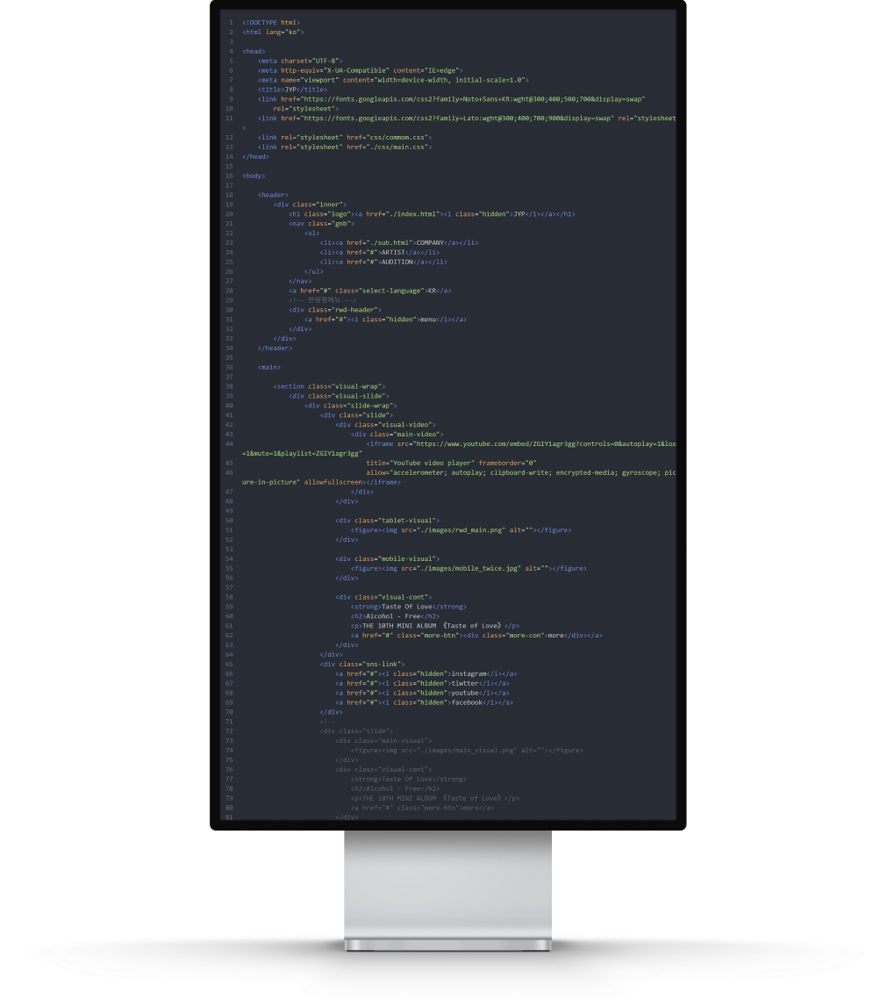
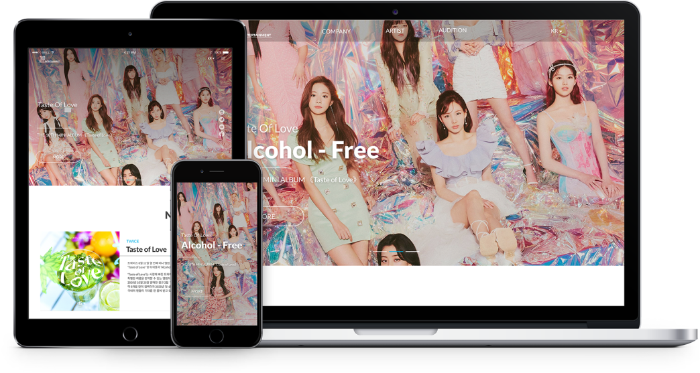
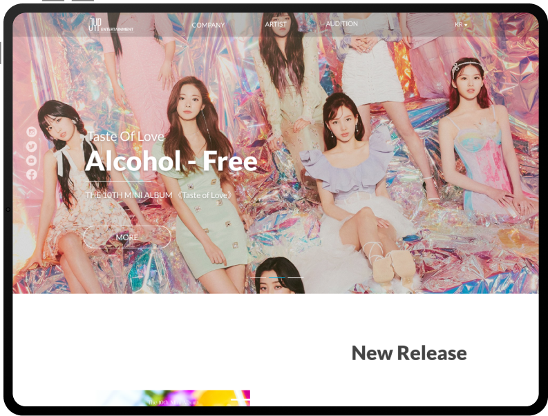
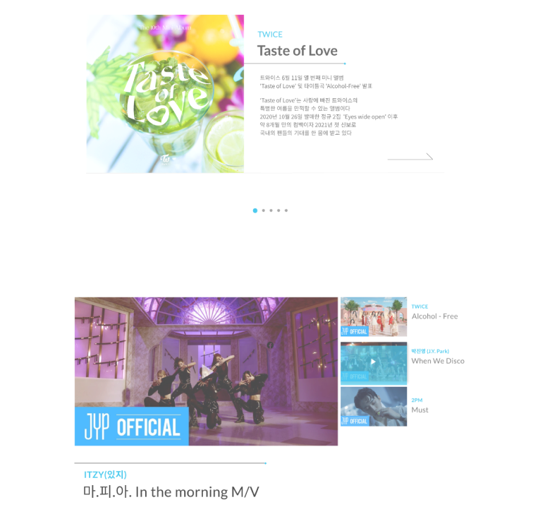
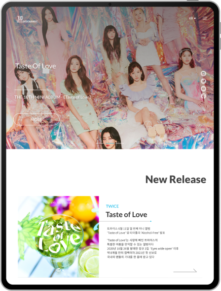
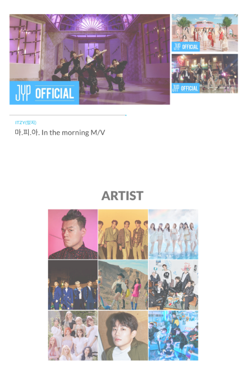
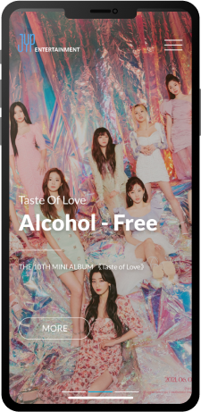
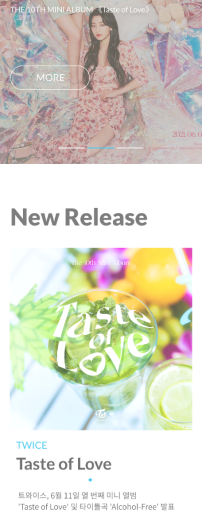

overview
엔터테인먼트의 특성을 살려 다양한 환경에서 안정적인
웹페이지로 동작할 수 있도록 jyp엔터테인먼트 기존 웹사이트를
반응형 웹사이트리뉴얼 아이템으로 선정했습니다
concept
JYP엔터테인먼트의 고유의색을 이용해 자유로운 개방감을 주기 위한
디자인을 했으며
그에 더해 신뢰감 또한 잃지 않는 디자인을 고려했습니다
color system
- #016BFB
- #00B4E7
- #232323


project
반응형 웹사이트 리뉴얼
work
디자인 100% 코딩 100%
period
3Weeks
Typography
-
- KOREAN
- Noto Sans KR
제이와이피 엔터테인먼트
제이와이피 엔터테인먼트
제이와이피 엔터테인먼트
-
- ENGLISH
- Lato
JYP entertainment
JYP entertainment
JYP entertainment
Layout Grid
1920px
1400px






Epilogue
jyp entertainment 리뉴얼 작업을 진행하며
반응형 구현에 대해 조금 더 알아보고 생각해 볼 수 있는
작업이였습니다
시간이 흐를수록 모바일웹 , 태블릿 이용자 수가 증가함에 따라 중요한
반응형 작업을
제가 직접 할 수 있음에 코드를 보며 가슴이 두근거렸던 시간이였습니다